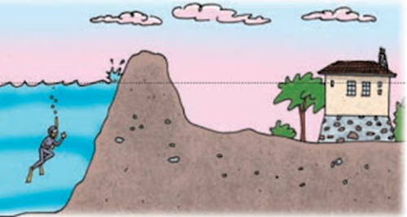
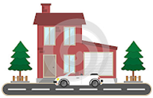

Tarea 2
En un documento de word formule dos problemas de sumas y restas combinadas, de su autoría.
Puede guiarse en base a estos dos ejemplos.
Ejemplo 1:

Si un buzo se sumerge 4 metros, luego sube 2 metros y finalmente desciende 5 metros más, ¿a qué profundidad se encuentra al final de su recorrido?
Recordar que: bajar, sumergir y descender, se representa con números negativos.
Recordar que: subir, aumentar, se representa con números positivos.
Datos:
-sumerge 4 metros........... -4
-Sube 2 metros................. +2
-Descender 5 metros........ -5
Respuesta= –4 +2 – 5 = –9 + 2 = –7 metros.
Ejemplo 2:

Un auto está ubicado a 7 metros. a la derecha de una casa, luego avanza 23 metros y retrocede 36m, pero después vuelve avanzar 19 metros y retrocede 36 m. ¿A qué distancia de la casa se encuentra?
Respuesta: +7 +23 - 36 +19 -36 =
los positivos = 7+23+19 = 49
los negativos = -36-36 = -72
Resultado = 49 -72 = -23, se encuentra a 23 metros de la casa.
Luego guardar el documento de word en el siguiente enlace. (el archivo debe estar de la siguiente forma Nombre_Apellido_tarea2).